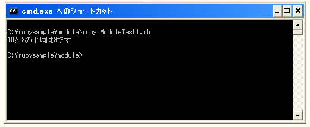

モジュールの定義
まずモジュールとは何かについて見ておきましょう。モジュールは次のようなものです。
module モジュール名 end
モジュールは「module」から始まり「end」で終わりとなります。そしてモジュールにはモジュール名を指定します。
モジュール名はモジュールを識別するための名前で大文字のアルファベットから始まります。例えば「HeikinModule」と言うモジュールを定義するには次のように行います。
module HeikinModule
def heikin(x, y)
kekka = (x + y) / 2
print(kekka)
end
end
モジュールはクラスと同じくメソッドを定義する事が出来ます。クラス変数に相当するものはモジュールにはありませんが定数は定義する事が出来ます。
このようにモジュールはクラスに非常に似た構成を持っていますが大きな違いとしてクラスはクラスからオブジェクトを作成することが出来ますがモジュールでは作成することは出来ません。モジュールの利用方法としては「モジュール名.メソッド名」の形式で関数のように実行するか、または他のクラスの中にインクルードして利用することが出来ます。
クラスでは継承をサポートしており1つの基幹クラスを継承して複数のクラスを作成する事が出来ます。これによって同じような機能を持つクラスを別々に1から作成する必要はありません。ただ、同じ様な機能が必要だったとしてもまったく別の目的のクラスである場合はクラスの継承によって共通化する部分を作成するにはおかしい場合があります。そのような場合に共通となる機能をモジュールとして定義し、各クラスにインクルードして利用することでコードの再利用性を高めることができます。
サンプルプログラム
では実際にサンプルプログラムを作成してみます。
module HeikinModule
def heikin(x, y)
kekka = (x + y) / 2
return kekka
end
end
class Test
include HeikinModule
def dispHeikin(x, y)
kekka = heikin(x, y)
print(x, "と", y, "の平均は", kekka, "です¥n")
end
end
test = Test.new
test.dispHeikin(10, 8)
上記を実行すると次のように表示されます。

今回のサンプルでは「Test」クラスの中に「HeikinModule」を読み込んで利用しています。このようにクラスの中に読み込まれたモジュールは、モジュールの中で定義されているメソッドをクラスの中から利用することができます。
( Written by Tatsuo Ikura )

著者 / TATSUO IKURA
初心者～中級者の方を対象としたプログラミング方法や開発環境の構築の解説を行うサイトの運営を行っています。